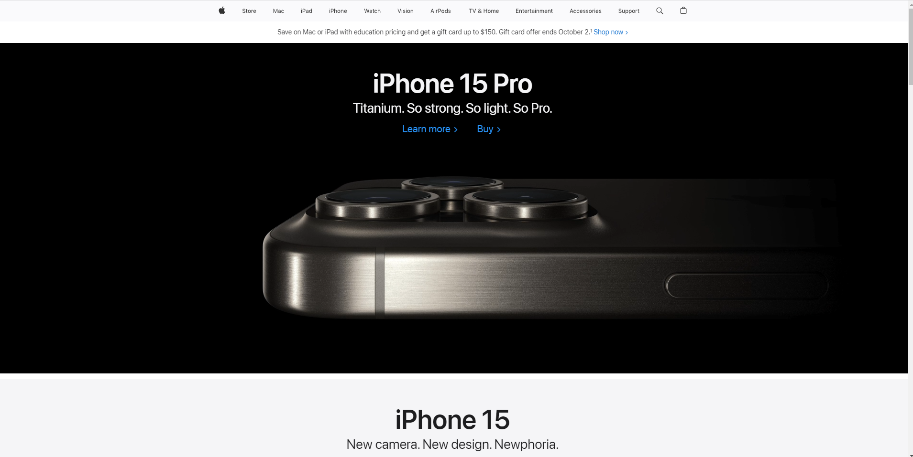

Visual Hierarchy
Organization/Company: ?
WebsiteDescription: Visual hierarchy is exemplified on this page through the use of contrasting font sizes and bold visuals, as well as a z-shaped pattern that human eyes naturally track upon first glance of a website or poster or other designed marketing and commerce.
Hick's Law
Organization/Company: ?
WebsiteDescription: Hick's Law is illustrated on this page by offering clear, limited choices to users, reducing decision-making time and making the presentation of the content more clear, without overstimulating the user.
Rule of Thirds
Organization/Company: ?
Website Description: The Rule of Thirds is applied here with a grid layout, ensuring elements align near the intersection points of the three by three grid for balanced visuals and customers visual appeal.